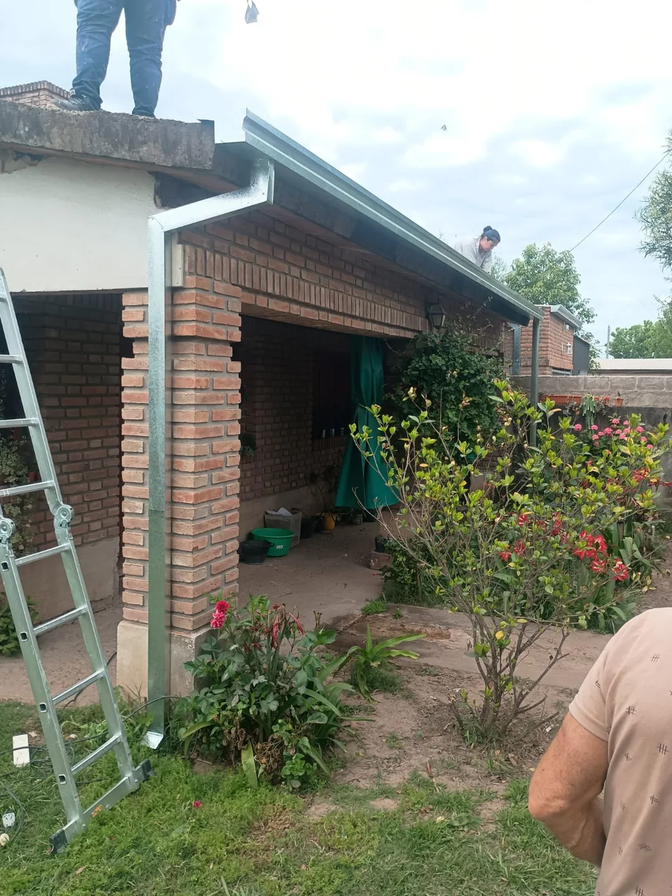

01
Techos y cubiertas
Instalación y reparación de techos de chapa y tejas. Cuidamos los encuentros y las terminaciones para proteger tu vivienda.
Consultar servicio
TECHOS · CANALETAS · ZINGUERÍA
Cada detalle de tu techo importa. Soluciones en hojalatería y zinguería para proteger tu casa de la lluvia y la humedad.
01 — LO QUE HACEMOS
Desde una canaleta hasta la reparación de tu cubierta. Encontramos la solución que tu hogar necesita.
Instalación y reparación de techos de chapa y tejas. Cuidamos los encuentros y las terminaciones para proteger tu vivienda.
Consultar servicioColocación, reparación y mantenimiento de canaletas y bajadas pluviales para conducir el agua de lluvia.
Consultar servicioBabetas, cumbreras y piezas de hojalatería adaptadas a las medidas y necesidades de cada techo.
Consultar servicioRevisión de puntos de ingreso de agua, sellados y reparaciones para resolver problemas de humedad.
Consultar servicio02 — NUESTROS TRABAJOS
Imágenes de trabajos realizados por Leonardo. Acercate a los detalles de cada instalación.
Fotos de nuestros trabajos · Tocá una imagen para ampliarla
03 — ASÍ TRABAJAMOS
Tu casa merece un trabajo bien hecho y un trato claro. Hablás directamente con Leonardo para evaluar lo que necesitás y coordinar los próximos pasos.
Contanos qué necesitásMandanos fotos de tu techo por WhatsApp y decinos en qué zona estás.
Revisamos el trabajo y coordinamos una visita si hace falta. El presupuesto es sin cargo.
Acordamos los detalles, realizamos el trabajo y revisamos las terminaciones.
CERCA DE TU CASA
Trabajamos en Santo Tomé y Santa Fe. Consultanos por tu ubicación y coordinamos la atención.
⌖No. Podés pedir tu presupuesto sin cargo y sin compromiso. Contanos qué necesitás para evaluar tu caso.
Una vista general del techo y fotos del detalle de la gotera, canaleta o sector a reparar. Sumá tu ubicación para coordinar.
Sí. Consultanos por las piezas y medidas que necesitás para tu techo, canaletas y terminaciones.
HABLEMOS DE TU TECHO
Pedí tu presupuesto sin cargo. Una consulta es el primer paso para cuidar tu hogar.
342 508 9416Leonardo Sánchez · Santo Tomé y Santa Fe